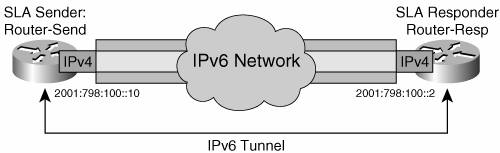
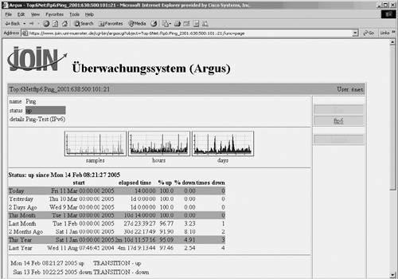
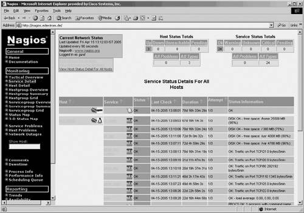
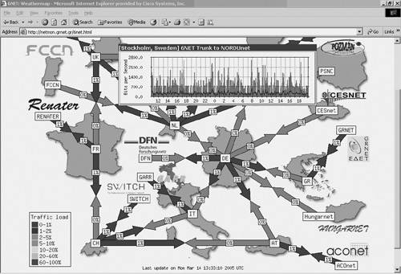
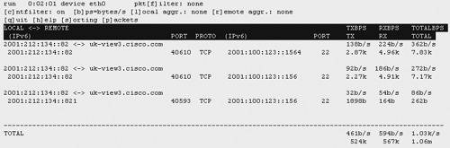

Performance ManagementWhen deploying new applications over an existing networking infrastructure, the impact on network performance is often a major concern. With IPv6, application deployment should fall into two categories. The first category is IPv4 applications migrating to IPv6. In this case, traffic patterns generated by these applications are expected to be quite similar to what they are with IPv4, hence predictable based on previous experience. The second category is brand new classes of applications, enabled by the larger address space, or the new capabilities of the IPv6 protocol. Peer-to-peer applications and Mobile IPv6 (MIPv6) belong to this category. These applications' traffic patterns are expected to be less predictable. In that context, the availability of management tools for a complete control and measurement of IPv6 traffic will be a key enabler for their adoption. Many management tools are already available to monitor IPv6 traffic. Some tools are not dependent on the IP version, so they can be used for IPv6 seamlessly; others are IPv4 tools that have been enhanced to support IPv6. Two distinct and complementary approaches are available for managing network performance. At the device level, some tools can retrieve data from each router (using SNMP, NetFlow, or locally available commands on the devices) and analyze it to determine links, devices, and network utilization. This is the case of tools such as NetFlow Collectors, Argus, Nagios, Ntop, MRTG, and Cricket. At the network level, some tools can analyze end-to-end performance by sending traffic through the network and measuring delay, jitter, and so on. This is the case of Cisco IP SLAs, Iperf, Pchar, and so on. All the major tools for managing network performance are reviewed in the following subsections. Although NetFlow Collectors (Cisco NFC, IPFlow,) also belong in the category of traffic-monitoring tools, they are covered separately in the "Flow Analysis Using NetFlow" section. Finally, some network performance-monitoring capabilities are also integrated in network-management platforms such as HP OpenView and CiscoWorks, as reviewed in the section "Management Platforms." Cisco IOS IP Service-Level AgreementsThe IP service-level agreements (IP SLAs) is a Cisco IOS feature that enables users to monitor network performance between a Cisco router and a remote device (which can be another Cisco router). Various performance metrics can be measured, including round-trip response time, connect time, packet loss, application performance, interpacket delay variance (jitter), and more. This feature enables users to receive notifications and to perform troubleshooting and problem analysis based on the statistics collected by the IP SLAs. In the absence of native IPv6 support for SAA, you can still use the tool in an IPv6-only environment. The principle of the IP SLAs usage for IPv6 is based on shadow routers that have an IPv4 connection over an IPv6 tunnel. A manual IPv6 tunnel is built between two shadow routers (responder Router-resp, and sender Router-send), as illustrated in Figure 10-12. Figure 10-12. Building IPv4 over IPv6 Tunnels for IP SLAs The IPv4 over IPv6 tunnel is configured as illustrated In Examples 10-12 and 10-13. On the responder: Example 10-12. IPv4 over IPv6 Tunnel Configuration at the SLA Responder
On the sender: Example 10-13. IPv4 over IPv6 Tunnel Configuration at the SLA Sender
With IPv4 connectivity established through the IPv6 tunnel, a router can be configured to become an SLA responder or an SLA sender. To configure the SLA responder, the configuration shown in Example 10-14 must be set up on the router Router-resp. Example 10-14. SLA Responder Configuration
For the SLA sender, the tester must be configured to execute certain kinds of tests such as jitter, echo, and so on. Example 10-15 demonstrates an echo reply test. Example 10-15. SLA Sender Configuration
For further detail about SLAs, refer to the Cisco IP SLAs documentation available at http://www.cisco.com. Other IPv6-Enabled Tools for Performance AnalysisNetwork monitoring and performance analysis is one of the richest areas for network-management tools. This section reviews some of these tools, the ones that are IPv6 capable and that have been deployed in production or experimental networks. Argus is a system- and network-monitoring application that includes IPv6 support since version 3.2. It can monitor TCP and UDP applications, IP connectivity, SNMP object identifiers, and so on. It comes with a web interface. Argus contains built-in alert notifications via e-mail and pager, and can be extended to use any other program such as winpopup. Figure 10-13 shows an Argus IPv6 screen. Figure 10-13. Argus Output ScreenArgus was started at Carnegie Mellon's Software Engineering Institute and is now distributed as open source. It is available at http://argus.tcp4me.com. Nagios is an open-source host-, service-, and network-monitoring program. The monitoring plug-ins were recently ported to support IPv6 and to operate over a native Ipv6 network. Figure 10-14 shows an IPv6 Nagios screen. Figure 10-14. Nagios Output ScreenNagios was initially created by Ethan Galstad under the Netsaint name and then later renamed. It is available at http://www.nagios.org. Ntop is an open-source web-based network-usage monitor that enables users to track relevant network activities, including network utilization, established connections network protocol usage, and traffic classification. It supports various management activities, including network optimization and planning, and detection of network security violations. In the context of the 6NET project, it was ported to IPv6. Ntop was initially developed by Luca Deri and is available at http://www.ntop.org. Ntop can be useful in the context of troubleshooting. MRTG is a tool to monitor the traffic load on network links. MRTG includes a Perl script, which gets traffic counters from the router using SNMP, and an application that logs traffic data, creates graphs, and presents them over a web interface. The Computer Networks research group at Roma Tre University added IPv6 support to MRTG in version 2.10.0. MRTGv6 can now run SNMP queries over IPv6. MRTG is already widely used to monitor the traffic on network links, CPU usage on routers, and other network and host parameters. MRTG is available at http://www.mrtg.org. Weathermap is a Perl-based tool that displays in a visual way the utilization of the network links of the network. The required data is acquired from graphs created by the MRTG package and are displayed as two-way colored arrows on a map representing the logical topology of the network. The resulting image is presented in a web page. Figure 10-15 shows a Weathermap screen on the 6NET network. Figure 10-15. Weathermap Output ScreenIperf is a tool to measure maximum TCP bandwidth, allowing the tuning of various parameters and UDP characteristics. Iperf reports bandwidth, delay jitter, and datagram loss. Iperf version 2.0.1 supports IPv6. Pchar is a tool used to characterize the bandwidth, latency, and loss of links along an end-to-end path through the Internet. Pchar measures the characteristics of the network path between two Internet hosts on IPv4 or IPv6 networks. The program measures network throughput and round-trip time by sending varying-sized UDP packets into the network and waiting for ICMP messages in response. It modulates the IPv4 Time To Live (TTL) field or the IPv6 Hop Limit field to get measurements at different distances along a path. Pchar was written by Bruce A. Mah and is available at http://www.kitchenlab.org/www/bmah/Software/pchar. Jnettop captures traffic coming across the host it is running on and displays streams sorted by bandwidth they use. The result is a set of network communications listed by host and port, including bytes out, bandwidth consumption. Jnettop has been extended to support IPv6. Figure 10-16 shows a Jnettop screen monitoring IPv6 traffic. Figure 10-16. Jnettop Output ScreenJnettop is available at http://jnettop.kubs.info |